← michaelgarbus.com
LatinKit
Synthesized Latin percussion for Ableton Live.
Twelve Latin percussion instruments synthesized in Max with modal, physical and particle models; nothing is played back from samples.
A make_kit.py script installs every voice and a Latin Kit Drum Rack preset.
View on GitHub
Requires Ableton Live Suite with Max for Live.
The voices
Jump to: Agogo | Bongo | Caxixi | Conga | Cuica | Ganzá | Güiro | Pandeiro | Repinique | Shaker | Surdo | Timbales
Agogo
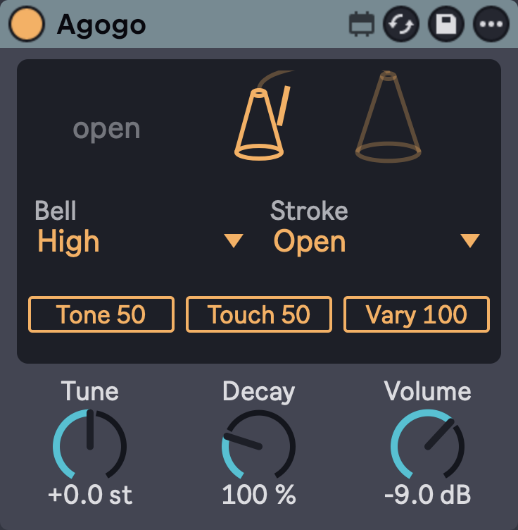
Modal agogo bell in two sizes (High, Low) with Open and Mute strokes. The strong modes are doublets, as on the real bell.
Bongo
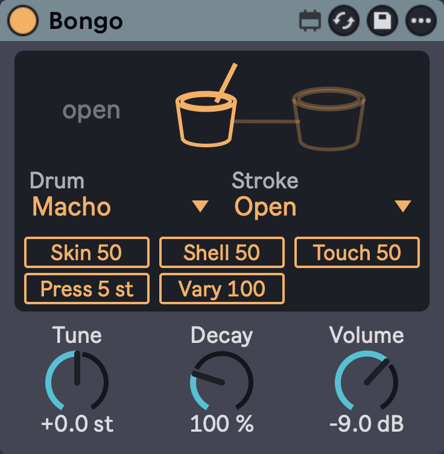
Modal bongo, Macho (small) or Hembra (large), with seven hand strokes: Open, Open 3F, Slap, Heel, Tip, Rim and Flam.
Caxixi
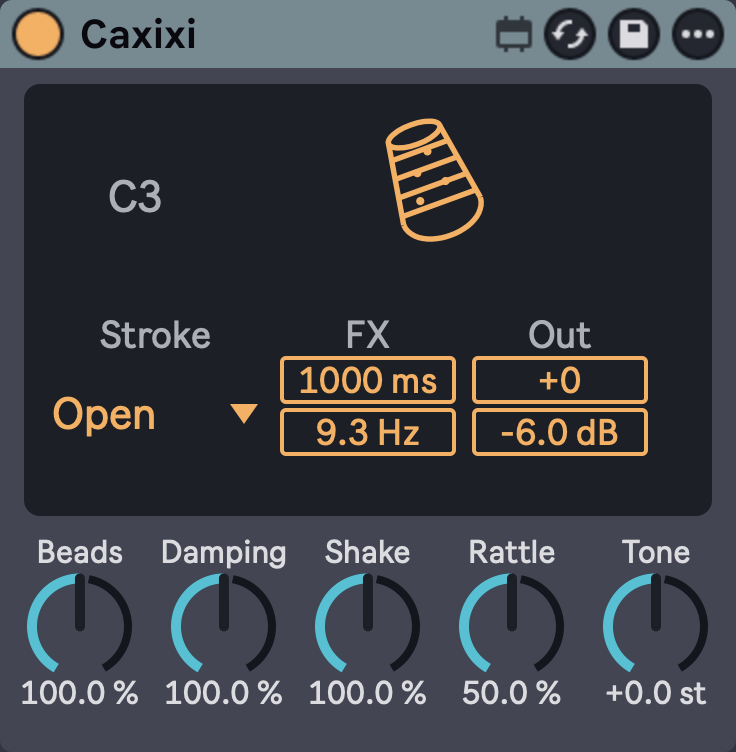
Woven-basket rattle on a PhISEM particle model, with Open and Hand strokes and an FX mode that plays a shaken phrase.
Conga
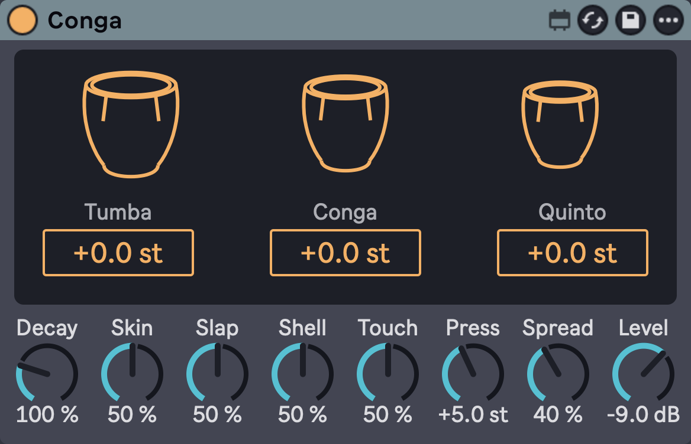
Three drums (tumba, conga, quinto), each a bank of damped modes with six hand strokes. The hand damps the head, as on a real drum.
Cuica
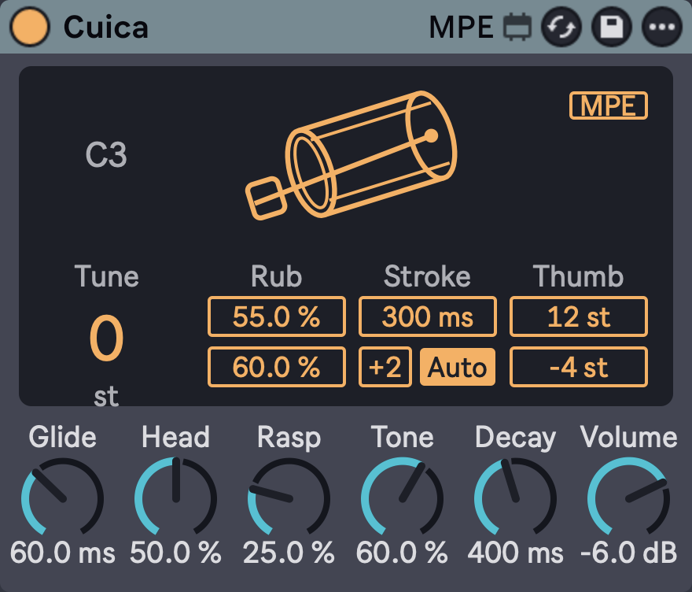
Friction drum: the rub swells and fades with each stroke. Alt sets push and pull alternation, and MPE pressure keeps the rub going while held.
Ganzá
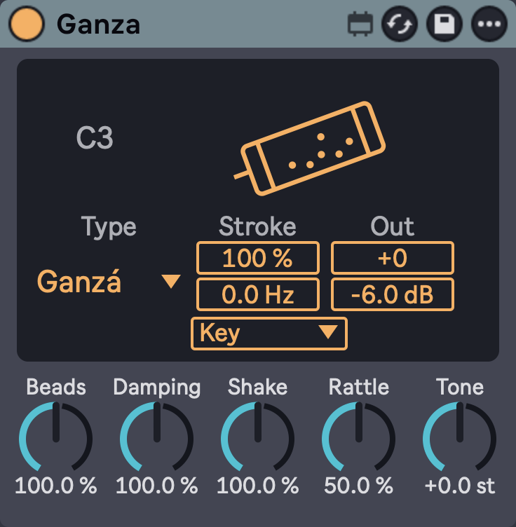
Samba ganzá (a metal tube of beads) and chocalho (a frame of platinelas), each with forward and back strokes fitted to Creative Commons recordings.
Güiro
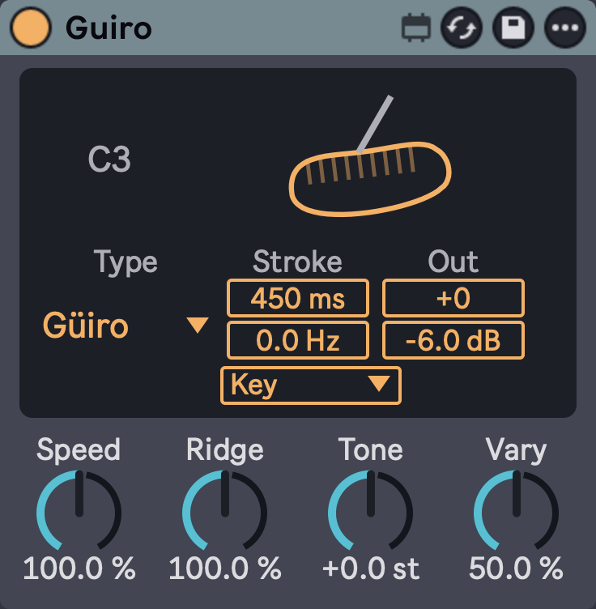
Scraper: a stick across ridges sounds as a train of impacts whose rate follows the stick's speed. Also covers the samba reco-reco.
Pandeiro
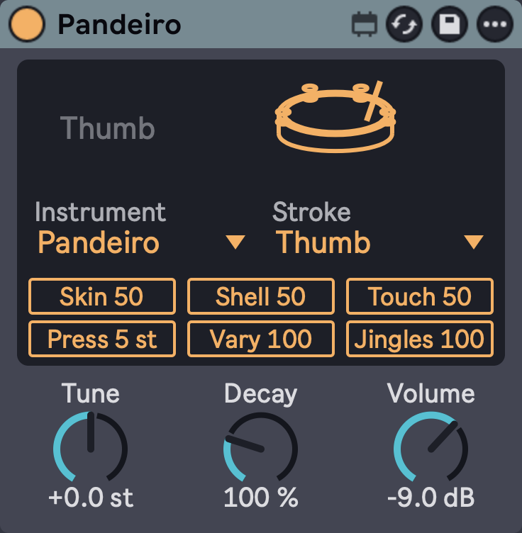
Pandeiro (frame drum with jingles) and tamborim from one engine. Two devices: a kit version for Drum Rack pads, and PandeiroMusical, where the MIDI key sets the pitch.
Repinique
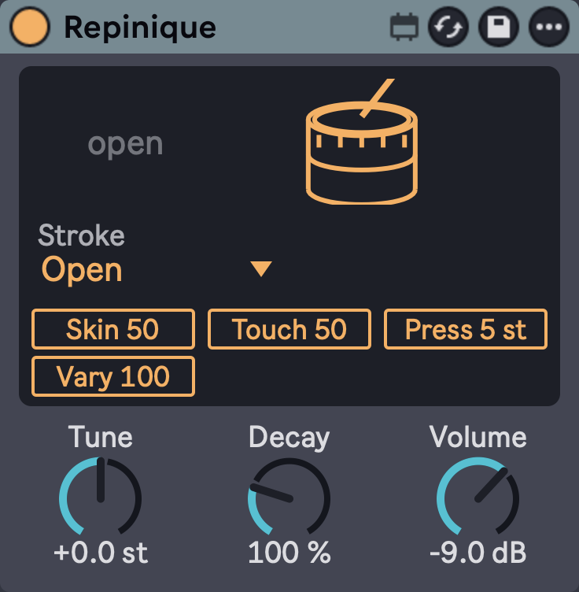
Modal samba repinique, the small high-tuned metal-shell lead drum, with six strokes. Fitted to four CC0 Freesound recordings.
Shaker
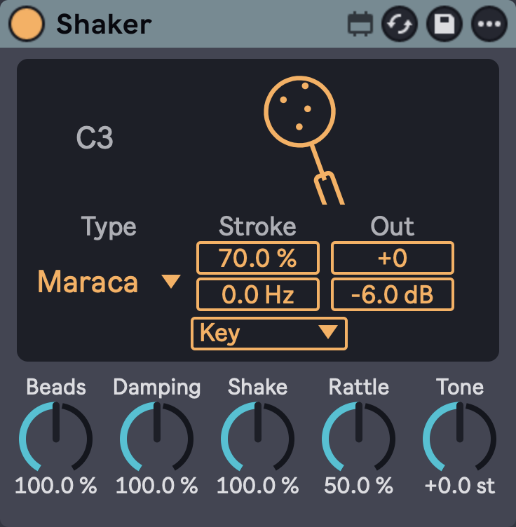
Shaker family on the PhISEM particle model: maraca, cabasa, shekere, ganzá/chocalho and egg shaker, each fitted to recordings.
Surdo
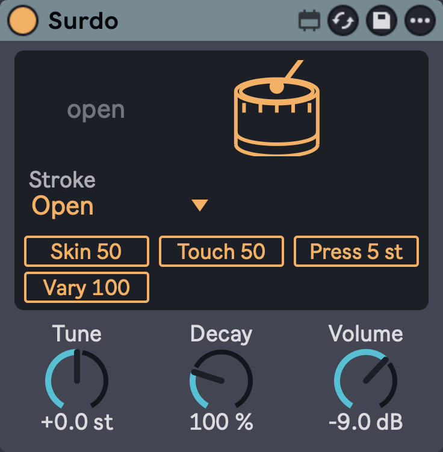
Modal samba surdo bass drum with Open, Mute, Rim and Finger strokes, fitted to the Latin Percussion pack's surdo takes.
Timbales
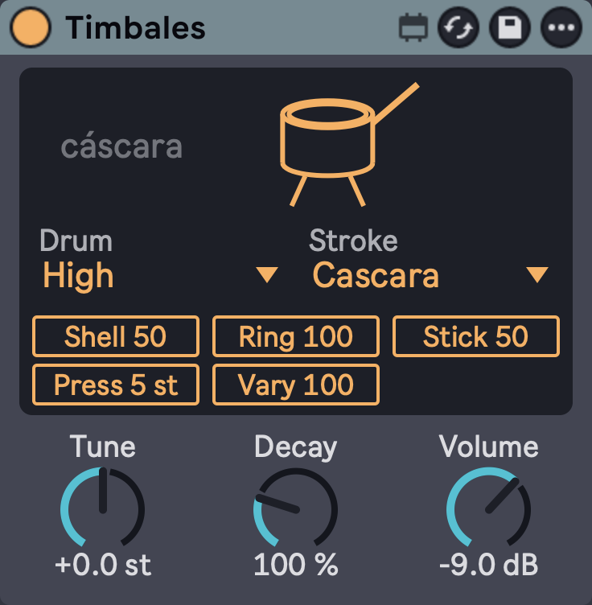
Timbale built around the cáscara (sticks on the shell): a head of damped modes plus a shell bank of 16 fixed-frequency modes.
← michaelgarbus.com